Statistical Analysis
Lab 7: T-Tests, Choropleth Maps, and Correlations
![]()
Intro
Setup
Open a new Quarto document and use this preamble:
---
title: "Lab 7"
author: "Your Name"
date: today
format:
html:
toc: true
number-sections: true
colorlinks: true
smooth-scroll: true
embed-resources: true
---Render and save under “week7” in your “stats” folder.
Background
Loading Libraries
From Z-Tests to T-Tests
- Z-tests require known population SD (\(\sigma\))
- In practice, \(\sigma\) is often unknown
- T-tests use the sample SD (\(s\)) instead
- More commonly used in real research
- We compare Latin America to Europe using t-tests
Loading the Data
Loading the Datasets
Download links if needed:
Cleaning the Data
Data Cleaning Pipeline
Focus on post-1900, average by country, remove non-countries:
life_expectancy_df <- subset(
life_expectancy_df, Year > 1900
)
life_expectancy_df2 <- life_expectancy_df %>%
dplyr::group_by(Entity, Code) %>%
dplyr::summarize(
life_exp_mean = mean(
Life.expectancy.at.birth..historical.
)
)
weird_labels <- c("OWID_KOS", "OWID_WRL", "")
clean_life_expectancy_df <- subset(
life_expectancy_df2, !(Code %in% weird_labels)
)Inspecting with head
Inspecting with glimpse
A more powerful way to inspect data:
Rows: 235
Columns: 3
Groups: Entity [235]
$ Entity <chr> "Afghanistan", "Albania", "Algeria", "American Samoa", "…
$ Code <chr> "AFG", "ALB", "DZA", "ASM", "AND", "AGO", "AIA", "ATG", …
$ life_exp_mean <dbl> 45.38333, 68.28611, 57.53013, 68.63750, 77.04861, 45.084…glimpse tells us: 235 observations, 3 variables, variable types, and first values.
Mapping the Data
Data vs Spatial Objects
Our cleaned data is a tibble:
Tibble: the central data structure for tidyverse (dplyr, ggplot2, tidyr, readr).
Loading Geographic Data
The rnaturalearth package provides country boundaries:
Inspecting the Spatial Data
Rows: 242
Columns: 169
$ featurecla <chr> "Admin-0 country", "Admin-0 country", "Admin-0 country", "A…
$ scalerank <int> 1, 1, 1, 3, 5, 6, 1, 1, 1, 3, 5, 3, 3, 3, 3, 1, 5, 3, 3, 3,…
$ labelrank <int> 3, 3, 3, 2, 3, 6, 4, 3, 4, 6, 6, 6, 6, 6, 4, 5, 2, 4, 5, 6,…
$ sovereignt <chr> "Zimbabwe", "Zambia", "Yemen", "Vietnam", "Venezuela", "Vat…
$ sov_a3 <chr> "ZWE", "ZMB", "YEM", "VNM", "VEN", "VAT", "VUT", "UZB", "UR…
$ adm0_dif <int> 0, 0, 0, 0, 0, 0, 0, 0, 0, 0, 0, 1, 1, 1, 1, 1, 1, 1, 1, 1,…
$ level <int> 2, 2, 2, 2, 2, 2, 2, 2, 2, 2, 2, 2, 2, 2, 2, 2, 2, 2, 2, 2,…
$ type <chr> "Sovereign country", "Sovereign country", "Sovereign countr…
$ tlc <chr> "1", "1", "1", "1", "1", "1", "1", "1", "1", "1", "1", "1",…
$ admin <chr> "Zimbabwe", "Zambia", "Yemen", "Vietnam", "Venezuela", "Vat…
$ adm0_a3 <chr> "ZWE", "ZMB", "YEM", "VNM", "VEN", "VAT", "VUT", "UZB", "UR…
$ geou_dif <int> 0, 0, 0, 0, 0, 0, 0, 0, 0, 0, 0, 0, 0, 0, 0, 0, 0, 0, 0, 0,…
$ geounit <chr> "Zimbabwe", "Zambia", "Yemen", "Vietnam", "Venezuela", "Vat…
$ gu_a3 <chr> "ZWE", "ZMB", "YEM", "VNM", "VEN", "VAT", "VUT", "UZB", "UR…
$ su_dif <int> 0, 0, 0, 0, 0, 0, 0, 0, 0, 0, 0, 0, 0, 0, 0, 0, 0, 0, 0, 0,…
$ subunit <chr> "Zimbabwe", "Zambia", "Yemen", "Vietnam", "Venezuela", "Vat…
$ su_a3 <chr> "ZWE", "ZMB", "YEM", "VNM", "VEN", "VAT", "VUT", "UZB", "UR…
$ brk_diff <int> 0, 0, 0, 0, 0, 0, 0, 0, 0, 0, 0, 0, 0, 0, 0, 0, 0, 0, 1, 0,…
$ name <chr> "Zimbabwe", "Zambia", "Yemen", "Vietnam", "Venezuela", "Vat…
$ name_long <chr> "Zimbabwe", "Zambia", "Yemen", "Vietnam", "Venezuela", "Vat…
$ brk_a3 <chr> "ZWE", "ZMB", "YEM", "VNM", "VEN", "VAT", "VUT", "UZB", "UR…
$ brk_name <chr> "Zimbabwe", "Zambia", "Yemen", "Vietnam", "Venezuela", "Vat…
$ brk_group <chr> NA, NA, NA, NA, NA, NA, NA, NA, NA, NA, NA, NA, NA, NA, NA,…
$ abbrev <chr> "Zimb.", "Zambia", "Yem.", "Viet.", "Ven.", "Vat.", "Van.",…
$ postal <chr> "ZW", "ZM", "YE", "VN", "VE", "V", "VU", "UZ", "UY", "FSM",…
$ formal_en <chr> "Republic of Zimbabwe", "Republic of Zambia", "Republic of …
$ formal_fr <chr> NA, NA, NA, NA, "República Bolivariana de Venezuela", NA, N…
$ name_ciawf <chr> "Zimbabwe", "Zambia", "Yemen", "Vietnam", "Venezuela", "Hol…
$ note_adm0 <chr> NA, NA, NA, NA, NA, NA, NA, NA, NA, NA, NA, "U.S.A.", "U.S.…
$ note_brk <chr> NA, NA, NA, NA, NA, NA, NA, NA, NA, NA, NA, NA, NA, NA, NA,…
$ name_sort <chr> "Zimbabwe", "Zambia", "Yemen, Rep.", "Vietnam", "Venezuela,…
$ name_alt <chr> NA, NA, NA, NA, NA, "Holy See", NA, NA, NA, NA, NA, NA, NA,…
$ mapcolor7 <int> 1, 5, 5, 5, 1, 1, 6, 2, 1, 5, 2, 4, 4, 4, 4, 4, 4, 6, 6, 6,…
$ mapcolor8 <int> 5, 8, 3, 6, 3, 3, 3, 3, 2, 2, 5, 5, 5, 5, 5, 5, 5, 6, 6, 6,…
$ mapcolor9 <int> 3, 5, 3, 5, 1, 4, 7, 5, 2, 4, 5, 1, 1, 1, 1, 1, 1, 6, 6, 6,…
$ mapcolor13 <int> 9, 13, 11, 4, 4, 2, 3, 4, 10, 13, 3, 1, 1, 1, 1, 1, 1, 3, 3…
$ pop_est <dbl> 14645468, 17861030, 29161922, 96462106, 28515829, 825, 2998…
$ pop_rank <int> 14, 14, 15, 16, 15, 2, 10, 15, 12, 9, 8, 8, 9, 9, 8, 12, 17…
$ pop_year <int> 2019, 2019, 2019, 2019, 2019, 2019, 2019, 2019, 2019, 2019,…
$ gdp_md <int> 21440, 23309, 22581, 261921, 482359, -99, 934, 57921, 56045…
$ gdp_year <int> 2019, 2019, 2019, 2019, 2014, 2019, 2019, 2019, 2019, 2018,…
$ economy <chr> "5. Emerging region: G20", "7. Least developed region", "7.…
$ income_grp <chr> "5. Low income", "4. Lower middle income", "4. Lower middle…
$ fips_10 <chr> "ZI", "ZA", "YM", "VM", "VE", "VT", "NH", "UZ", "UY", "FM",…
$ iso_a2 <chr> "ZW", "ZM", "YE", "VN", "VE", "VA", "VU", "UZ", "UY", "FM",…
$ iso_a2_eh <chr> "ZW", "ZM", "YE", "VN", "VE", "VA", "VU", "UZ", "UY", "FM",…
$ iso_a3 <chr> "ZWE", "ZMB", "YEM", "VNM", "VEN", "VAT", "VUT", "UZB", "UR…
$ iso_a3_eh <chr> "ZWE", "ZMB", "YEM", "VNM", "VEN", "VAT", "VUT", "UZB", "UR…
$ iso_n3 <chr> "716", "894", "887", "704", "862", "336", "548", "860", "85…
$ iso_n3_eh <chr> "716", "894", "887", "704", "862", "336", "548", "860", "85…
$ un_a3 <chr> "716", "894", "887", "704", "862", "336", "548", "860", "85…
$ wb_a2 <chr> "ZW", "ZM", "RY", "VN", "VE", "-99", "VU", "UZ", "UY", "FM"…
$ wb_a3 <chr> "ZWE", "ZMB", "YEM", "VNM", "VEN", "-99", "VUT", "UZB", "UR…
$ woe_id <int> 23425004, 23425003, 23425002, 23424984, 23424982, 23424986,…
$ woe_id_eh <int> 23425004, 23425003, 23425002, 23424984, 23424982, 23424986,…
$ woe_note <chr> "Exact WOE match as country", "Exact WOE match as country",…
$ adm0_iso <chr> "ZWE", "ZMB", "YEM", "VNM", "VEN", "VAT", "VUT", "UZB", "UR…
$ adm0_diff <chr> NA, NA, NA, NA, NA, NA, NA, NA, NA, NA, NA, NA, NA, NA, NA,…
$ adm0_tlc <chr> "ZWE", "ZMB", "YEM", "VNM", "VEN", "VAT", "VUT", "UZB", "UR…
$ adm0_a3_us <chr> "ZWE", "ZMB", "YEM", "VNM", "VEN", "VAT", "VUT", "UZB", "UR…
$ adm0_a3_fr <chr> "ZWE", "ZMB", "YEM", "VNM", "VEN", "VAT", "VUT", "UZB", "UR…
$ adm0_a3_ru <chr> "ZWE", "ZMB", "YEM", "VNM", "VEN", "VAT", "VUT", "UZB", "UR…
$ adm0_a3_es <chr> "ZWE", "ZMB", "YEM", "VNM", "VEN", "VAT", "VUT", "UZB", "UR…
$ adm0_a3_cn <chr> "ZWE", "ZMB", "YEM", "VNM", "VEN", "VAT", "VUT", "UZB", "UR…
$ adm0_a3_tw <chr> "ZWE", "ZMB", "YEM", "VNM", "VEN", "VAT", "VUT", "UZB", "UR…
$ adm0_a3_in <chr> "ZWE", "ZMB", "YEM", "VNM", "VEN", "VAT", "VUT", "UZB", "UR…
$ adm0_a3_np <chr> "ZWE", "ZMB", "YEM", "VNM", "VEN", "VAT", "VUT", "UZB", "UR…
$ adm0_a3_pk <chr> "ZWE", "ZMB", "YEM", "VNM", "VEN", "VAT", "VUT", "UZB", "UR…
$ adm0_a3_de <chr> "ZWE", "ZMB", "YEM", "VNM", "VEN", "VAT", "VUT", "UZB", "UR…
$ adm0_a3_gb <chr> "ZWE", "ZMB", "YEM", "VNM", "VEN", "VAT", "VUT", "UZB", "UR…
$ adm0_a3_br <chr> "ZWE", "ZMB", "YEM", "VNM", "VEN", "VAT", "VUT", "UZB", "UR…
$ adm0_a3_il <chr> "ZWE", "ZMB", "YEM", "VNM", "VEN", "VAT", "VUT", "UZB", "UR…
$ adm0_a3_ps <chr> "ZWE", "ZMB", "YEM", "VNM", "VEN", "VAT", "VUT", "UZB", "UR…
$ adm0_a3_sa <chr> "ZWE", "ZMB", "YEM", "VNM", "VEN", "VAT", "VUT", "UZB", "UR…
$ adm0_a3_eg <chr> "ZWE", "ZMB", "YEM", "VNM", "VEN", "VAT", "VUT", "UZB", "UR…
$ adm0_a3_ma <chr> "ZWE", "ZMB", "YEM", "VNM", "VEN", "VAT", "VUT", "UZB", "UR…
$ adm0_a3_pt <chr> "ZWE", "ZMB", "YEM", "VNM", "VEN", "VAT", "VUT", "UZB", "UR…
$ adm0_a3_ar <chr> "ZWE", "ZMB", "YEM", "VNM", "VEN", "VAT", "VUT", "UZB", "UR…
$ adm0_a3_jp <chr> "ZWE", "ZMB", "YEM", "VNM", "VEN", "VAT", "VUT", "UZB", "UR…
$ adm0_a3_ko <chr> "ZWE", "ZMB", "YEM", "VNM", "VEN", "VAT", "VUT", "UZB", "UR…
$ adm0_a3_vn <chr> "ZWE", "ZMB", "YEM", "VNM", "VEN", "VAT", "VUT", "UZB", "UR…
$ adm0_a3_tr <chr> "ZWE", "ZMB", "YEM", "VNM", "VEN", "VAT", "VUT", "UZB", "UR…
$ adm0_a3_id <chr> "ZWE", "ZMB", "YEM", "VNM", "VEN", "VAT", "VUT", "UZB", "UR…
$ adm0_a3_pl <chr> "ZWE", "ZMB", "YEM", "VNM", "VEN", "VAT", "VUT", "UZB", "UR…
$ adm0_a3_gr <chr> "ZWE", "ZMB", "YEM", "VNM", "VEN", "VAT", "VUT", "UZB", "UR…
$ adm0_a3_it <chr> "ZWE", "ZMB", "YEM", "VNM", "VEN", "VAT", "VUT", "UZB", "UR…
$ adm0_a3_nl <chr> "ZWE", "ZMB", "YEM", "VNM", "VEN", "VAT", "VUT", "UZB", "UR…
$ adm0_a3_se <chr> "ZWE", "ZMB", "YEM", "VNM", "VEN", "VAT", "VUT", "UZB", "UR…
$ adm0_a3_bd <chr> "ZWE", "ZMB", "YEM", "VNM", "VEN", "VAT", "VUT", "UZB", "UR…
$ adm0_a3_ua <chr> "ZWE", "ZMB", "YEM", "VNM", "VEN", "VAT", "VUT", "UZB", "UR…
$ adm0_a3_un <int> -99, -99, -99, -99, -99, -99, -99, -99, -99, -99, -99, -99,…
$ adm0_a3_wb <int> -99, -99, -99, -99, -99, -99, -99, -99, -99, -99, -99, -99,…
$ continent <chr> "Africa", "Africa", "Asia", "Asia", "South America", "Europ…
$ region_un <chr> "Africa", "Africa", "Asia", "Asia", "Americas", "Europe", "…
$ subregion <chr> "Eastern Africa", "Eastern Africa", "Western Asia", "South-…
$ region_wb <chr> "Sub-Saharan Africa", "Sub-Saharan Africa", "Middle East & …
$ name_len <int> 8, 6, 5, 7, 9, 7, 7, 10, 7, 10, 12, 14, 15, 4, 14, 11, 24, …
$ long_len <int> 8, 6, 5, 7, 9, 7, 7, 10, 7, 30, 16, 24, 28, 4, 14, 11, 13, …
$ abbrev_len <int> 5, 6, 4, 5, 4, 4, 4, 4, 4, 6, 6, 6, 11, 4, 9, 4, 6, 10, 6, …
$ tiny <int> -99, -99, -99, 2, -99, 4, 2, 5, -99, -99, 2, 3, 3, 2, 3, -9…
$ homepart <int> 1, 1, 1, 1, 1, 1, 1, 1, 1, 1, 1, -99, -99, -99, -99, -99, 1…
$ min_zoom <dbl> 0, 0, 0, 0, 0, 0, 0, 0, 0, 0, 0, 0, 0, 0, 0, 0, 0, 0, 0, 0,…
$ min_label <dbl> 2.5, 3.0, 3.0, 2.0, 2.5, 5.0, 4.0, 3.0, 3.0, 5.0, 5.0, 5.0,…
$ max_label <dbl> 8.0, 8.0, 8.0, 7.0, 7.5, 10.0, 9.0, 8.0, 8.0, 10.0, 10.0, 1…
$ label_x <dbl> 29.92544, 26.39530, 45.87438, 105.38729, -64.59938, 12.4534…
$ label_y <dbl> -18.911640, -14.660804, 15.328226, 21.715416, 7.182476, 41.…
$ ne_id <dbl> 1159321441, 1159321439, 1159321425, 1159321417, 1159321411,…
$ wikidataid <chr> "Q954", "Q953", "Q805", "Q881", "Q717", "Q237", "Q686", "Q2…
$ name_ar <chr> "زيمبابوي", "زامبيا", "اليمن", "فيتنام", "فنزويلا", "الفاتي…
$ name_bn <chr> "জিম্বাবুয়ে", "জাম্বিয়া", "ইয়েমেন", "ভিয়েতনাম", "ভেনেজুয়েলা", "ভ্যাটিকান সিটি", "ভানুয়াতু",…
$ name_de <chr> "Simbabwe", "Sambia", "Jemen", "Vietnam", "Venezuela", "Vat…
$ name_en <chr> "Zimbabwe", "Zambia", "Yemen", "Vietnam", "Venezuela", "Vat…
$ name_es <chr> "Zimbabue", "Zambia", "Yemen", "Vietnam", "Venezuela", "Ciu…
$ name_fa <chr> "زیمبابوه", "زامبیا", "یمن", "ویتنام", "ونزوئلا", "واتیکان"…
$ name_fr <chr> "Zimbabwe", "Zambie", "Yémen", "Viêt Nam", "Venezuela", "Ci…
$ name_el <chr> "Ζιμπάμπουε", "Ζάμπια", "Υεμένη", "Βιετνάμ", "Βενεζουέλα", …
$ name_he <chr> "זימבבואה", "זמביה", "תימן", "וייטנאם", "ונצואלה", "קריית ה…
$ name_hi <chr> "ज़िम्बाब्वे", "ज़ाम्बिया", "यमन", "वियतनाम", "वेनेज़ुएला", "वैटिकन नगर", "वानूआटू", …
$ name_hu <chr> "Zimbabwe", "Zambia", "Jemen", "Vietnám", "Venezuela", "Vat…
$ name_id <chr> "Zimbabwe", "Zambia", "Yaman", "Vietnam", "Venezuela", "Vat…
$ name_it <chr> "Zimbabwe", "Zambia", "Yemen", "Vietnam", "Venezuela", "Cit…
$ name_ja <chr> "ジンバブエ", "ザンビア", "イエメン", "ベトナム", "ベネズエラ", "バチカン", "バヌアツ", "…
$ name_ko <chr> "짐바브웨", "잠비아", "예멘", "베트남", "베네수엘라", "바티칸 시국", "바누아투", "우즈베…
$ name_nl <chr> "Zimbabwe", "Zambia", "Jemen", "Vietnam", "Venezuela", "Vat…
$ name_pl <chr> "Zimbabwe", "Zambia", "Jemen", "Wietnam", "Wenezuela", "Wat…
$ name_pt <chr> "Zimbábue", "Zâmbia", "Iémen", "Vietname", "Venezuela", "Va…
$ name_ru <chr> "Зимбабве", "Замбия", "Йемен", "Вьетнам", "Венесуэла", "Ват…
$ name_sv <chr> "Zimbabwe", "Zambia", "Jemen", "Vietnam", "Venezuela", "Vat…
$ name_tr <chr> "Zimbabve", "Zambiya", "Yemen", "Vietnam", "Venezuela", "Va…
$ name_uk <chr> "Зімбабве", "Замбія", "Ємен", "В'єтнам", "Венесуела", "Вати…
$ name_ur <chr> "زمبابوے", "زیمبیا", "یمن", "ویتنام", "وینیزویلا", "ویٹیکن …
$ name_vi <chr> "Zimbabwe", "Zambia", "Yemen", "Việt Nam", "Venezuela", "Th…
$ name_zh <chr> "津巴布韦", "赞比亚", "也门", "越南", "委内瑞拉", "梵蒂冈", "瓦努阿图", "乌兹别克斯坦",…
$ name_zht <chr> "辛巴威", "尚比亞", "葉門", "越南", "委內瑞拉", "梵蒂岡", "萬那杜", "烏茲別克", "烏拉…
$ fclass_iso <chr> "Admin-0 country", "Admin-0 country", "Admin-0 country", "A…
$ tlc_diff <chr> NA, NA, NA, NA, NA, NA, NA, NA, NA, NA, NA, NA, NA, NA, NA,…
$ fclass_tlc <chr> "Admin-0 country", "Admin-0 country", "Admin-0 country", "A…
$ fclass_us <chr> NA, NA, NA, NA, NA, NA, NA, NA, NA, NA, NA, NA, NA, NA, NA,…
$ fclass_fr <chr> NA, NA, NA, NA, NA, NA, NA, NA, NA, NA, NA, NA, NA, NA, NA,…
$ fclass_ru <chr> NA, NA, NA, NA, NA, NA, NA, NA, NA, NA, NA, NA, NA, NA, NA,…
$ fclass_es <chr> NA, NA, NA, NA, NA, NA, NA, NA, NA, NA, NA, NA, NA, NA, NA,…
$ fclass_cn <chr> NA, NA, NA, NA, NA, NA, NA, NA, NA, NA, NA, NA, NA, NA, NA,…
$ fclass_tw <chr> NA, NA, NA, NA, NA, NA, NA, NA, NA, NA, NA, NA, NA, NA, NA,…
$ fclass_in <chr> NA, NA, NA, NA, NA, NA, NA, NA, NA, NA, NA, NA, NA, NA, NA,…
$ fclass_np <chr> NA, NA, NA, NA, NA, NA, NA, NA, NA, NA, NA, NA, NA, NA, NA,…
$ fclass_pk <chr> NA, NA, NA, NA, NA, NA, NA, NA, NA, NA, NA, NA, NA, NA, NA,…
$ fclass_de <chr> NA, NA, NA, NA, NA, NA, NA, NA, NA, NA, NA, NA, NA, NA, NA,…
$ fclass_gb <chr> NA, NA, NA, NA, NA, NA, NA, NA, NA, NA, NA, NA, NA, NA, NA,…
$ fclass_br <chr> NA, NA, NA, NA, NA, NA, NA, NA, NA, NA, NA, NA, NA, NA, NA,…
$ fclass_il <chr> NA, NA, NA, NA, NA, NA, NA, NA, NA, NA, NA, NA, NA, NA, NA,…
$ fclass_ps <chr> NA, NA, NA, NA, NA, NA, NA, NA, NA, NA, NA, NA, NA, NA, NA,…
$ fclass_sa <chr> NA, NA, NA, NA, NA, NA, NA, NA, NA, NA, NA, NA, NA, NA, NA,…
$ fclass_eg <chr> NA, NA, NA, NA, NA, NA, NA, NA, NA, NA, NA, NA, NA, NA, NA,…
$ fclass_ma <chr> NA, NA, NA, NA, NA, NA, NA, NA, NA, NA, NA, NA, NA, NA, NA,…
$ fclass_pt <chr> NA, NA, NA, NA, NA, NA, NA, NA, NA, NA, NA, NA, NA, NA, NA,…
$ fclass_ar <chr> NA, NA, NA, NA, NA, NA, NA, NA, NA, NA, NA, NA, NA, NA, NA,…
$ fclass_jp <chr> NA, NA, NA, NA, NA, NA, NA, NA, NA, NA, NA, NA, NA, NA, NA,…
$ fclass_ko <chr> NA, NA, NA, NA, NA, NA, NA, NA, NA, NA, NA, NA, NA, NA, NA,…
$ fclass_vn <chr> NA, NA, NA, NA, NA, NA, NA, NA, NA, NA, NA, NA, NA, NA, NA,…
$ fclass_tr <chr> NA, NA, NA, NA, NA, NA, NA, NA, NA, NA, NA, NA, NA, NA, NA,…
$ fclass_id <chr> NA, NA, NA, NA, NA, NA, NA, NA, NA, NA, NA, NA, NA, NA, NA,…
$ fclass_pl <chr> NA, NA, NA, NA, NA, NA, NA, NA, NA, NA, NA, NA, NA, NA, NA,…
$ fclass_gr <chr> NA, NA, NA, NA, NA, NA, NA, NA, NA, NA, NA, NA, NA, NA, NA,…
$ fclass_it <chr> NA, NA, NA, NA, NA, NA, NA, NA, NA, NA, NA, NA, NA, NA, NA,…
$ fclass_nl <chr> NA, NA, NA, NA, NA, NA, NA, NA, NA, NA, NA, NA, NA, NA, NA,…
$ fclass_se <chr> NA, NA, NA, NA, NA, NA, NA, NA, NA, NA, NA, NA, NA, NA, NA,…
$ fclass_bd <chr> NA, NA, NA, NA, NA, NA, NA, NA, NA, NA, NA, NA, NA, NA, NA,…
$ fclass_ua <chr> NA, NA, NA, NA, NA, NA, NA, NA, NA, NA, NA, NA, NA, NA, NA,…
$ geometry <MULTIPOLYGON [°]> MULTIPOLYGON (((31.28789 -2..., MULTIPOLYGON (…170 variables is a lot. For our purposes, the key columns are adm0_a3 (ISO country code for merging), continent, and geometry (the polygon shapes).
A Basic World Map
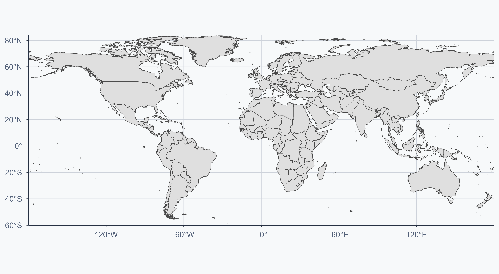
Subsetting the Spatial Data
Keep only the variables we need for merging:
Rows: 242
Columns: 5
$ admin <chr> "Zimbabwe", "Zambia", "Yemen", "Vietnam", "Venezuela", "Vat…
$ adm0_a3 <chr> "ZWE", "ZMB", "YEM", "VNM", "VEN", "VAT", "VUT", "UZB", "UR…
$ sovereignt <chr> "Zimbabwe", "Zambia", "Yemen", "Vietnam", "Venezuela", "Vat…
$ continent <chr> "Africa", "Africa", "Asia", "Asia", "South America", "Europ…
$ geometry <MULTIPOLYGON [°]> MULTIPOLYGON (((31.28789 -2..., MULTIPOLYGON (…Checking Country Codes
We need to compare codes between the two datasets:
chr [1:242] "ZWE" "ZMB" "YEM" "VNM" "VEN" "VAT" "VUT" "UZB" "URY" "FSM" ...Finding Mismatches with setdiff
Before merging, always check: do the keys actually match? setdiff(X, Y) returns elements in X not in Y:
countries_dif <- setdiff(ctries_sp, ctries_df)
world3 <- subset(world2, adm0_a3 %in% countries_dif)
cat(length(countries_dif), "countries in the map have no life expectancy data:\n")18 countries in the map have no life expectancy data: [1] "South Georgia and the Islands" "British Indian Ocean Territory"
[3] "Pitcairn Islands" "South Sudan"
[5] "Somaliland" "Western Sahara"
[7] "Kosovo" "Palestine"
[9] "Saint Barthelemy" "French Southern and Antarctic Lands"These will appear as NA (grey) on the choropleth. This is a general lesson: merging always loses observations — check what you’re losing before interpreting the result.
Merging Data to the Map
Rows: 242
Columns: 7
$ admin <chr> "Zimbabwe", "Zambia", "Yemen", "Vietnam", "Venezuela", "…
$ adm0_a3 <chr> "ZWE", "ZMB", "YEM", "VNM", "VEN", "VAT", "VUT", "UZB", …
$ sovereignt <chr> "Zimbabwe", "Zambia", "Yemen", "Vietnam", "Venezuela", "…
$ continent <chr> "Africa", "Africa", "Asia", "Asia", "South America", "Eu…
$ Entity <chr> "Zimbabwe", "Zambia", "Yemen", "Vietnam", "Venezuela", "…
$ life_exp_mean <dbl> 54.24722, 51.56389, 51.64861, 65.73194, 65.33421, 75.331…
$ geometry <MULTIPOLYGON [°]> MULTIPOLYGON (((31.28789 -2..., MULTIPOLYGO…Choropleth Map: Life Expectancy
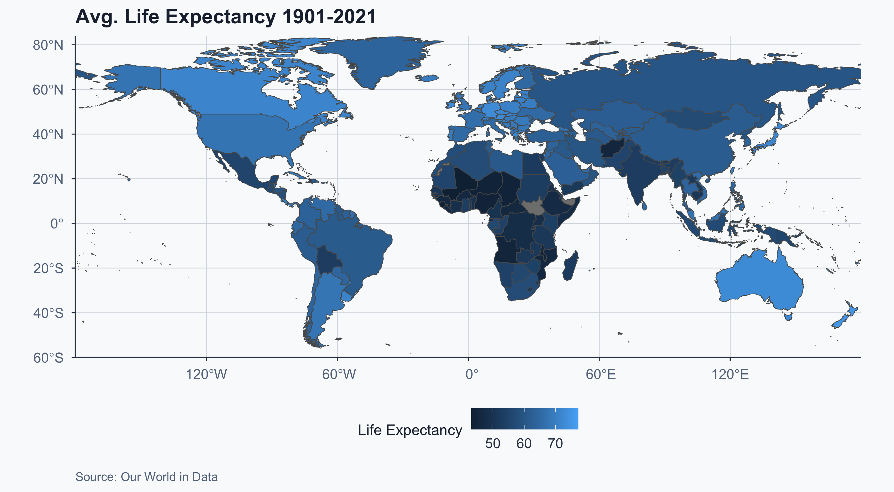
Improved Choropleth
Show code
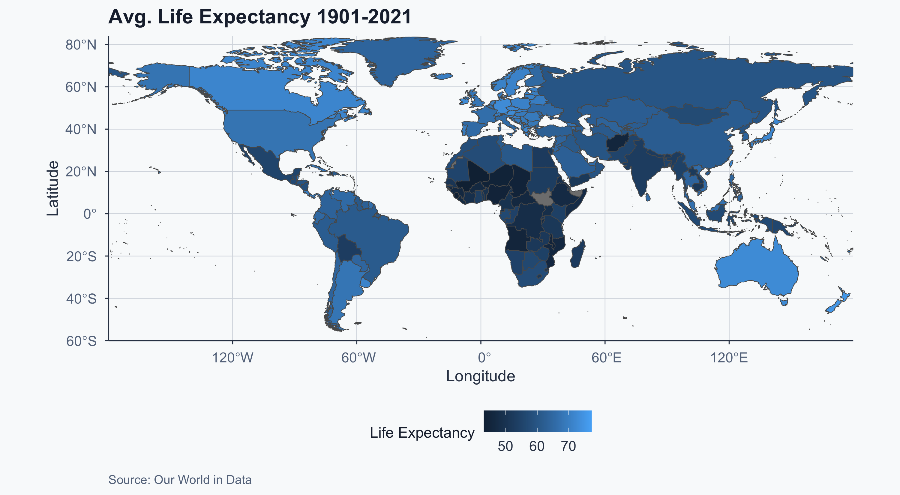
Performing a T-Test
Continent Labels
We can use the continent variable from the spatial data:
Why South America, Not Latin America?
Our data has continent, not linguistic/cultural regions. “South America” excludes Mexico, Central America, and the Caribbean — all part of Latin America.
- Latin America = linguistic concept (Spanish/Portuguese-speaking Americas)
- South America = geographic concept (the continent)
- Our spatial data only gives us the geographic version
- This is a limitation: our results describe South America, not all of Latin America
Keep this in mind when interpreting results — we are comparing continents, not cultural regions.
Subsetting by Continent
- South America: 13 countries
- Europe: 50 countries
Map: South America
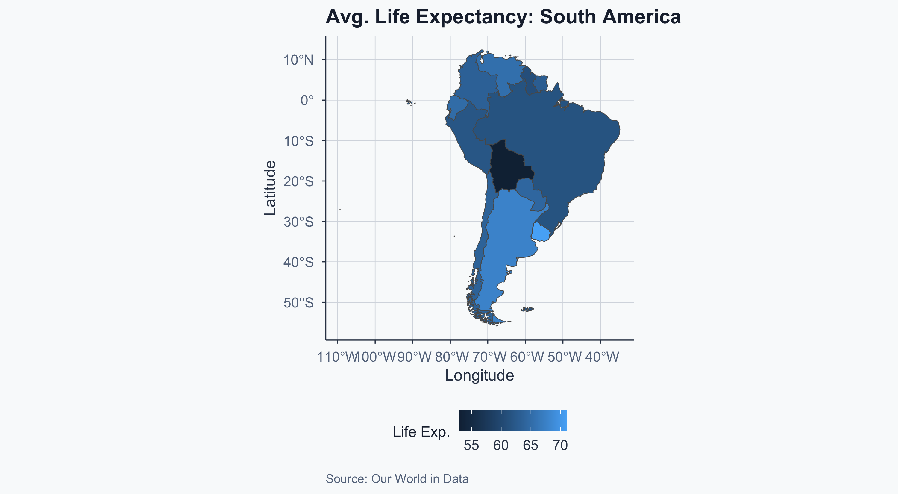
Map: Europe
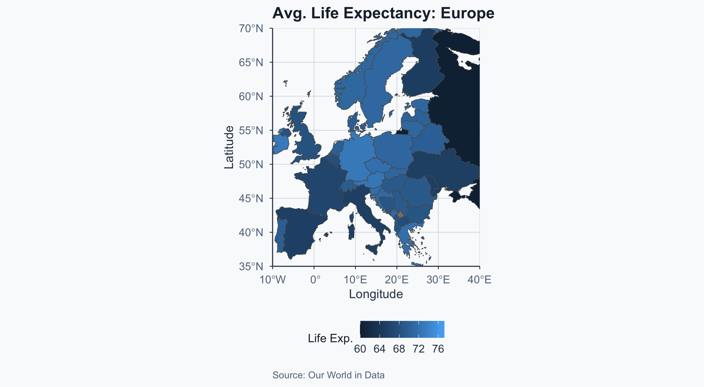
Before We Test: Checking Assumptions
The t-test assumes:
- Independence — the countries in each sample are independent of each other (plausible: different sovereign states)
- Normality — the data within each group are approximately normally distributed
- South America has only 13 countries — with \(n < 30\), the normality assumption matters more
- In practice, the t-test is fairly robust to non-normality, but we should be cautious with such a small sample
- Equal variances? — R’s
t.test()uses Welch’s t-test by default, which does not assume equal variances
Bottom line: the test is defensible here, but the small South American sample (\(n = 13\)) means our power to detect differences is limited.
T-Test: Is Latam Greater?
test_greater <- t.test(
sample_latam$life_exp_mean,
sample_eu$life_exp_mean,
alternative = "greater"
)
test_greater
Welch Two Sample t-test
data: sample_latam$life_exp_mean and sample_eu$life_exp_mean
t = -5.5367, df = 17.108, p-value = 1
alternative hypothesis: true difference in means is greater than 0
95 percent confidence interval:
-9.228658 Inf
sample estimates:
mean of x mean of y
63.25522 70.27813 Interpretation: Greater
- \(H_1\): Latam life expectancy \(>\) EU life expectancy
- \(H_0\): Latam life expectancy \(\leq\) EU life expectancy
A p-value of 1 means the data are completely inconsistent with this direction. We do not reject \(H_0\).
T-Test: Is Latam Less?
The map suggests EU has higher life expectancy. Let’s test that:
test_less <- t.test(
sample_latam$life_exp_mean,
sample_eu$life_exp_mean,
alternative = "less"
)
test_less
Welch Two Sample t-test
data: sample_latam$life_exp_mean and sample_eu$life_exp_mean
t = -5.5367, df = 17.108, p-value = 1.771e-05
alternative hypothesis: true difference in means is less than 0
95 percent confidence interval:
-Inf -4.817149
sample estimates:
mean of x mean of y
63.25522 70.27813 Interpretation: Less
- \(H_1\): Latam life expectancy \(<\) EU life expectancy
- \(H_0\): Latam life expectancy \(\geq\) EU life expectancy
We reject \(H_0\) because \(p < 0.05\). Latam life expectancy is significantly lower than Europe’s.
T-Test: Two-Sided
Are they simply different (either direction)?
test_twosided <- t.test(
sample_latam$life_exp_mean,
sample_eu$life_exp_mean,
alternative = "two.sided"
)
test_twosided
Welch Two Sample t-test
data: sample_latam$life_exp_mean and sample_eu$life_exp_mean
t = -5.5367, df = 17.108, p-value = 3.541e-05
alternative hypothesis: true difference in means is not equal to 0
95 percent confidence interval:
-9.697752 -4.348055
sample estimates:
mean of x mean of y
63.25522 70.27813 Interpretation: Two-Sided
- \(H_1\): Latam mean \(\neq\) EU mean
- \(H_0\): Latam mean \(=\) EU mean
\(p < 0.05\) → reject \(H_0\). The means are significantly different.
Boxplot: Latam vs EU
Show code
box_dat <- rbind(sample_latam, sample_eu)
ggplot(box_dat, aes(
x = continent, y = life_exp_mean, color = continent
)) +
geom_boxplot(linewidth = 0.8) +
coord_cartesian(xlim = c(0, 3), ylim = c(40, 80)) +
scale_color_manual(values = c(
"Europe" = sage, "South America" = gold
)) +
labs(
title = "Life Expectancy: South America vs Europe",
x = "", y = "Life Expectancy",
caption = "Source: Our World in Data"
) +
theme_meridian() +
theme(legend.position = "none")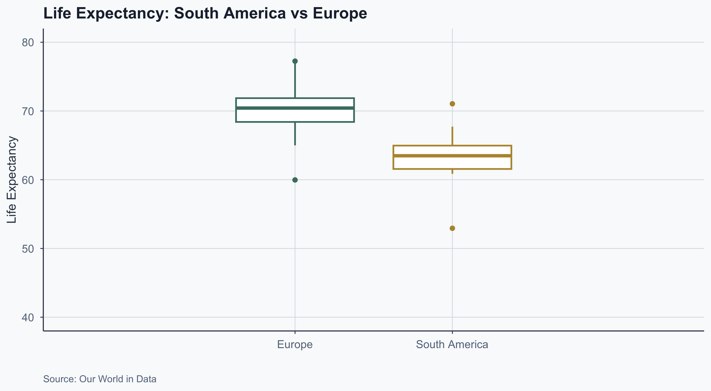
Interpreting a Boxplot
Show code
merged_latam_bp <- subset(box_dat, continent == "South America")
hwy_50 <- quantile(merged_latam_bp$life_exp_mean, 0.5)
hwy_25 <- quantile(merged_latam_bp$life_exp_mean, 0.25)
hwy_75 <- quantile(merged_latam_bp$life_exp_mean, 0.75)
sd_bp <- sd(merged_latam_bp$life_exp_mean, na.rm = TRUE) / 4
hwy_iqr <- hwy_75 - hwy_25
merged_eu_bp <- subset(box_dat, continent == "Europe")
hwy2_25 <- quantile(merged_eu_bp$life_exp_mean, 0.25, na.rm = TRUE)
hwy2_75 <- quantile(merged_eu_bp$life_exp_mean, 0.75, na.rm = TRUE)
hwy2_min <- boxplot.stats(merged_eu_bp$life_exp_mean)$stats[1]
hwy2_max <- boxplot.stats(merged_eu_bp$life_exp_mean)$stats[5]
outliermax <- max(merged_latam_bp$life_exp_mean, na.rm = TRUE)
outliermin <- min(merged_latam_bp$life_exp_mean, na.rm = TRUE)
ggplot(box_dat, aes(
x = continent, y = life_exp_mean, color = continent
)) +
geom_boxplot() +
coord_cartesian(xlim = c(0, 3), ylim = c(40, 80)) +
scale_color_manual(values = c(
"Europe" = sage, "South America" = gold
)) +
annotate("text", y = hwy_50 - sd_bp, x = 2,
label = "Median", color = terracotta, fontface = 2) +
annotate("text", y = hwy_25 - 1, x = 3,
label = "25th percentile", color = terracotta, fontface = 3) +
annotate("segment", y = hwy_25, yend = hwy_25,
x = 2.6, xend = 2.4, color = terracotta,
arrow = arrow(length = unit(0.3, "lines"))) +
annotate("text", y = hwy_75 + 1, x = 3,
label = "75th percentile", color = terracotta, fontface = 3) +
annotate("segment", y = hwy_75, yend = hwy_75,
x = 2.6, xend = 2.4, color = terracotta,
arrow = arrow(length = unit(0.3, "lines"))) +
annotate("text", y = hwy_25 + 2 * hwy_iqr, x = -0.1,
label = "Interquartile\n range (IQR)", color = sage) +
annotate("segment", y = c(hwy2_25, hwy2_75),
yend = c(hwy2_25, hwy2_75), color = sage,
x = 0.2, xend = 0.6,
arrow = arrow(length = unit(0.3, "lines"))) +
annotate("segment", y = hwy2_25, yend = hwy2_75,
x = 0.2, xend = 0.2, color = sage) +
annotate("text", y = hwy2_max, x = 0.8,
label = "Maximum\n75% + (1.5 \u00d7 IQR)",
hjust = 1, lineheight = 1, color = sage) +
annotate("segment", y = hwy2_max, yend = hwy2_max,
x = 1, xend = 0.8, color = sage,
arrow = arrow(length = unit(0.3, "lines"))) +
annotate("text", y = hwy2_min, x = 0.8,
label = "Minimum\n25% - (1.5 \u00d7 IQR)",
hjust = 1, lineheight = 1, color = sage) +
annotate("segment", y = hwy2_min, yend = hwy2_min,
x = 1, xend = 0.8, color = sage,
arrow = arrow(length = unit(0.3, "lines"))) +
annotate("text", y = outliermax, x = 2.3,
label = "Outlier", color = terracotta, fontface = 2) +
annotate("text", y = outliermin, x = 2.3,
label = "Outlier", color = terracotta, fontface = 2) +
labs(
title = "Anatomy of a Boxplot",
x = "", y = "Life Expectancy",
caption = "Source: Our World in Data"
) +
theme_meridian() +
theme(legend.position = "none")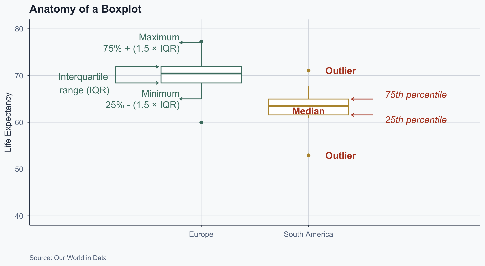
Boxplot with Jitter
Adding individual observations with geom_jitter:
Show code
ggplot(box_dat, aes(
x = continent, y = life_exp_mean, color = continent
)) +
geom_boxplot(linewidth = 0.8) +
geom_jitter(width = 0.15, alpha = 0.6) +
scale_color_manual(values = c(
"Europe" = sage, "South America" = gold
)) +
labs(
title = "Life Expectancy with Individual Countries",
x = "", y = "Life Expectancy",
caption = "Source: Our World in Data"
) +
theme_meridian() +
theme(legend.position = "none")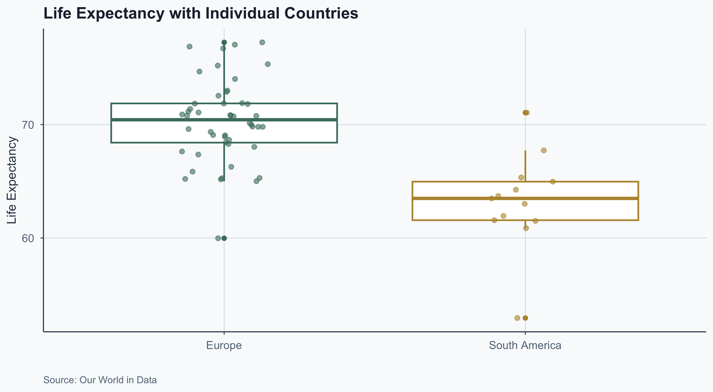
Mapping Europe Over Time
Setting Map Boundaries
Use extreme countries to define coordinates:
norway <- subset(box_dat, Entity == "Norway")
max_lat_y <- st_bbox(norway)["ymax"]
greece <- subset(box_dat, Entity == "Greece")
min_lat_y <- st_bbox(greece)["ymin"]
ukraine <- subset(box_dat, Entity == "Ukraine")
max_lon_x <- st_bbox(ukraine)["xmax"]
portugal <- subset(box_dat, Entity == "Portugal")
min_lon_x <- st_bbox(portugal)["xmin"]| Boundary | Country | Value |
|---|---|---|
| North (ymax) | Norway | 80.5 |
| South (ymin) | Greece | 34.9 |
| East (xmax) | Ukraine | 40.1 |
| West (xmin) | Portugal | -31.3 |
Europe: Average Life Expectancy
Show code
ggplot() +
geom_sf(data = box_dat, aes(fill = life_exp_mean)) +
coord_sf(
xlim = c(min_lon_x, max_lon_x),
ylim = c(min_lat_y, max_lat_y),
expand = FALSE
) +
labs(
title = "Avg. Life Expectancy 1901-2021",
x = "Longitude", y = "Latitude",
fill = "Life Exp.",
caption = "Source: Our World in Data"
) +
theme_meridian()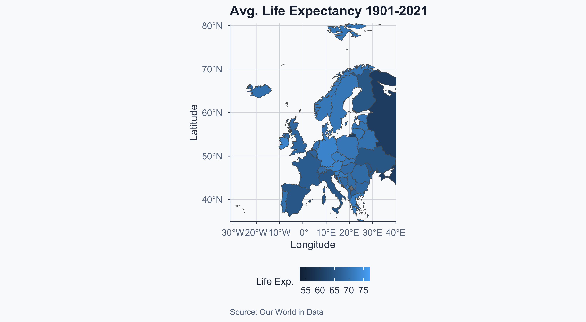
Visualizing the Boundary Points
Show code
euro_extreme <- data.frame(
x_lon = c(min_lon_x, max_lon_x, min_lon_x, max_lon_x),
y_lat = c(min_lat_y, max_lat_y, max_lat_y, min_lat_y),
name = c("South-West", "North-East", "North-West", "South-East")
)
ggplot() +
geom_sf(data = box_dat, aes(fill = life_exp_mean)) +
geom_point(
data = euro_extreme, aes(x = x_lon, y = y_lat),
fill = "blue", color = "darkred", size = 3
) +
geom_label_repel(
data = euro_extreme,
aes(x = x_lon, y = y_lat, label = name),
fill = alpha("white", 0.8)
) +
coord_sf(
xlim = c(min_lon_x - 3, max_lon_x + 3),
ylim = c(min_lat_y - 3, max_lat_y + 3),
expand = FALSE
) +
labs(
title = "Avg. Life Expectancy with Boundary Points",
x = "Longitude", y = "Latitude",
fill = "Life Exp.",
caption = "Source: Our World in Data"
) +
theme_meridian()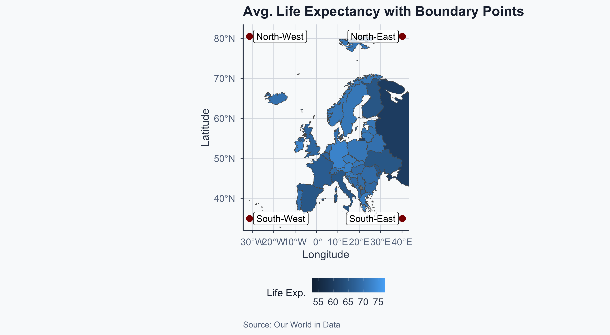
Merging by Year: 1950
Map: Europe 1950
Show code
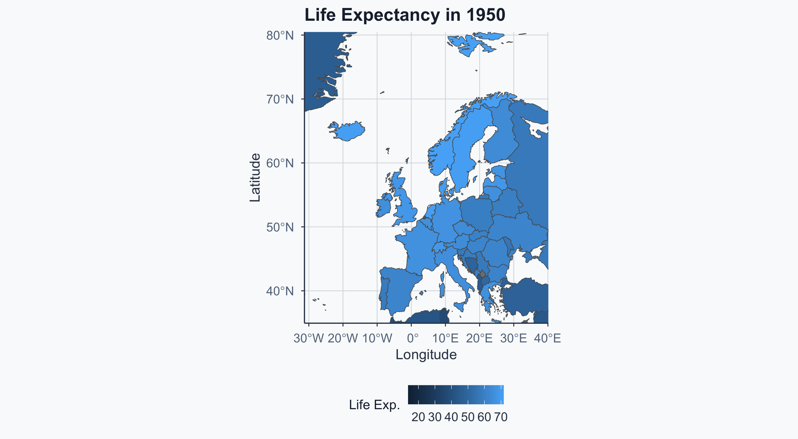
Merging by Year: 2020
Map: Europe 2020
Show code
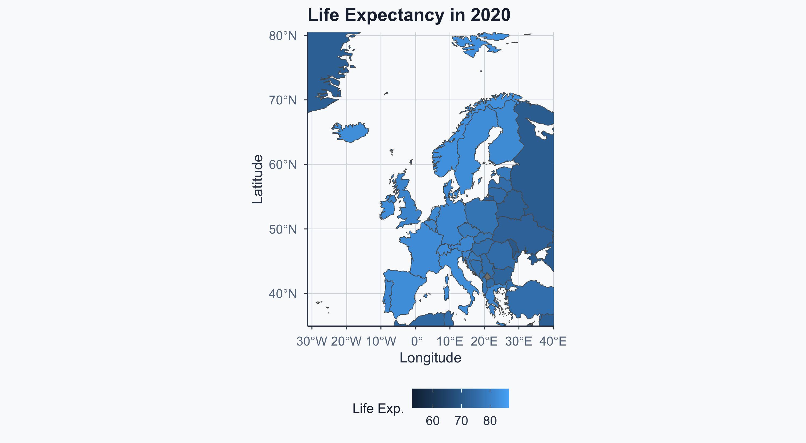
Side by Side (Without Fixed Scale)
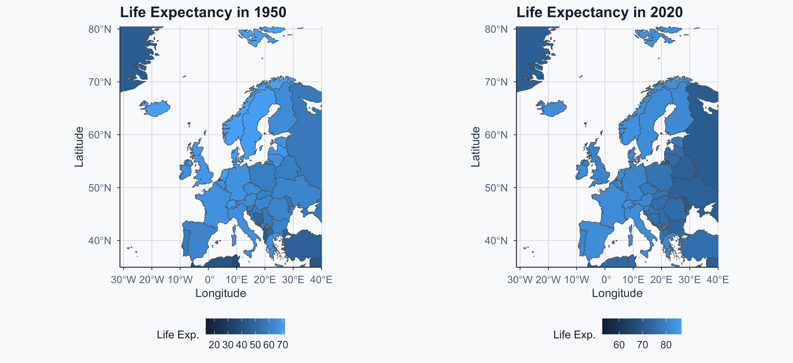
Hard to compare — the color scales differ between maps!
Fixing the Color Scale
We need the same min/max for both maps:
1950 vs 2020: Common Scale
Show code
figure2 <- ggplot() +
geom_sf(data = world_1950, aes(fill = life_exp_mean)) +
coord_sf(
xlim = c(min_lon_x, max_lon_x),
ylim = c(min_lat_y, max_lat_y),
expand = FALSE
) +
scale_fill_gradient(
limits = c(vmin, vmax), name = "Life Expectancy"
) +
labs(title = "1950", x = "Longitude", y = "Latitude") +
theme_meridian()
figure3 <- ggplot() +
geom_sf(data = world_2020, aes(fill = life_exp_mean)) +
coord_sf(
xlim = c(min_lon_x, max_lon_x),
ylim = c(min_lat_y, max_lat_y),
expand = FALSE
) +
scale_fill_gradient(
limits = c(vmin, vmax), name = "Life Expectancy"
) +
labs(title = "2020", x = "Longitude", y = "Latitude") +
theme_meridian()
ggarrange(figure2, figure3, ncol = 2, common.legend = TRUE)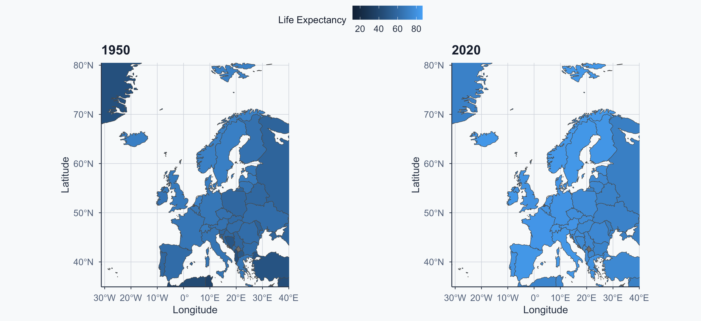
Computing the Change: 1950 to 2020
life_expectancy_1950_2020 <- subset(
life_expectancy_df,
Year %in% c(1950, 2020) & Code != ""
)
life_expectancy_1950_2020b <- life_expectancy_1950_2020 %>%
dplyr::arrange(Code, Year) %>%
dplyr::group_by(Code) %>%
dplyr::filter(n() == 2) %>%
dplyr::summarise(
differ = last(life_exp_mean) - first(life_exp_mean)
)
life_expectancy_1950_2020c <- subset(
life_expectancy_1950_2020b, !is.na(differ)
)
glimpse(life_expectancy_1950_2020c)Rows: 237
Columns: 2
$ Code <chr> "ABW", "AFG", "AGO", "AIA", "ALB", "AND", "ARE", "ARG", "ARM", …
$ differ <dbl> 18.5, 34.9, 26.0, 21.6, 32.3, 14.4, 37.8, 14.7, 12.9, 11.4, 21.…Map: Change in Life Expectancy
Show code
world_change <- left_join(
world2, life_expectancy_1950_2020c,
by = c("adm0_a3" = "Code")
)
ggplot() +
geom_sf(data = world_change, aes(fill = differ)) +
coord_sf(
xlim = c(min_lon_x, max_lon_x),
ylim = c(min_lat_y, max_lat_y),
expand = FALSE
) +
labs(
title = "Life Expectancy Change: 2020 - 1950",
x = "Longitude", y = "Latitude",
fill = "Change",
caption = "Source: Our World in Data"
) +
theme_meridian()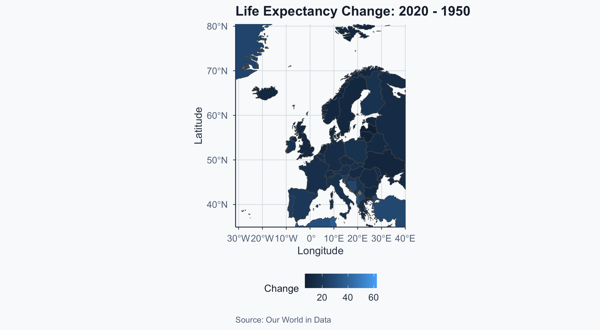
Highest and Lowest Change
world_change_eu <- subset(world_change, continent == "Europe")
highest <- subset(
world_change_eu,
differ == max(world_change_eu$differ, na.rm = TRUE)
)
cat("Highest change:", highest$admin, "\n")Highest change: Albania lowest <- subset(
world_change_eu,
differ == min(world_change_eu$differ, na.rm = TRUE)
)
cat("Lowest change:", lowest$admin)Lowest change: LatviaCorrelation
From Maps to Relationships
We have mapped life expectancy across space and time. A natural question: is life expectancy related to urbanization?
Both variables are available in our data — we can merge them and find out.
Preparing the Data
Computing the Correlation
A strong positive correlation (\(r \approx 0.80\)): higher urbanization is associated with higher life expectancy. But what does this actually look like?
Scatterplot: Life Expectancy vs Urbanization
Show code
ggplot(merged_df2, aes(x = urb_mean, y = life_exp_mean)) +
geom_point(alpha = 0.15, color = sage, size = 1) +
geom_smooth(method = "lm", color = terracotta, se = TRUE,
fill = alpha(terracotta, 0.15)) +
labs(
title = "Life Expectancy vs Urbanization",
subtitle = "Each point = one country-year observation",
x = "Urban Population (%)",
y = "Life Expectancy at Birth",
caption = "Source: Our World in Data"
) +
theme_meridian()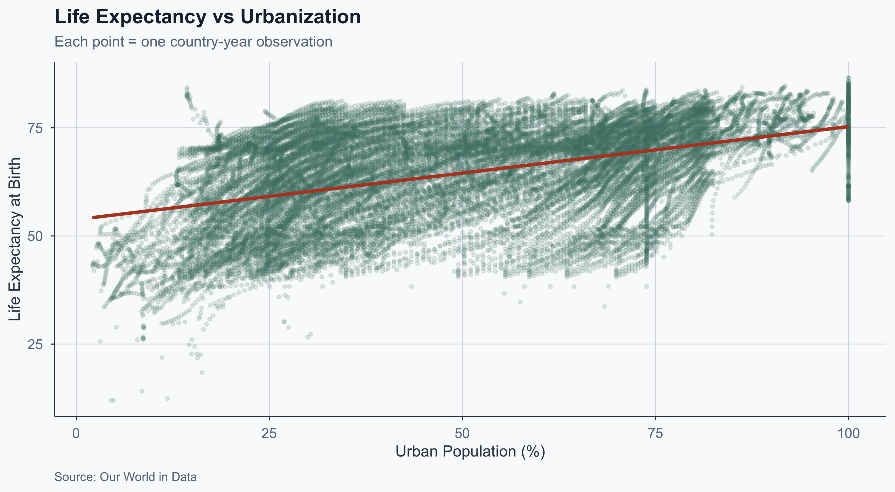
Correlation ≠ Causation
The correlation is real, but think about what’s in the data:
- Each point is a country-year — we’re pooling observations across both countries and time
- Over time, both urbanization and life expectancy have increased worldwide
- Much of this correlation may be driven by the shared time trend, not a direct causal link
- This is a textbook example of a confound: a third variable (time/development) drives both
A correlation of \(r = 0.80\) tells us there is a strong association — it does not tell us that urbanization causes longer lives.
Takeaways
- T-tests let us compare group means when \(\sigma\) is unknown — but check your assumptions (especially with small \(n\))
- Choropleths reveal spatial patterns that summary statistics hide
- Correlation measures association — but always ask: could a third variable explain this?
- The real skill is not running
t.test()orcor()— it’s knowing what the output means and what it doesn’t
Popescu (JCU) Statistical Analysis Lab 7: T-Tests, Choropleth Maps, and Correlations